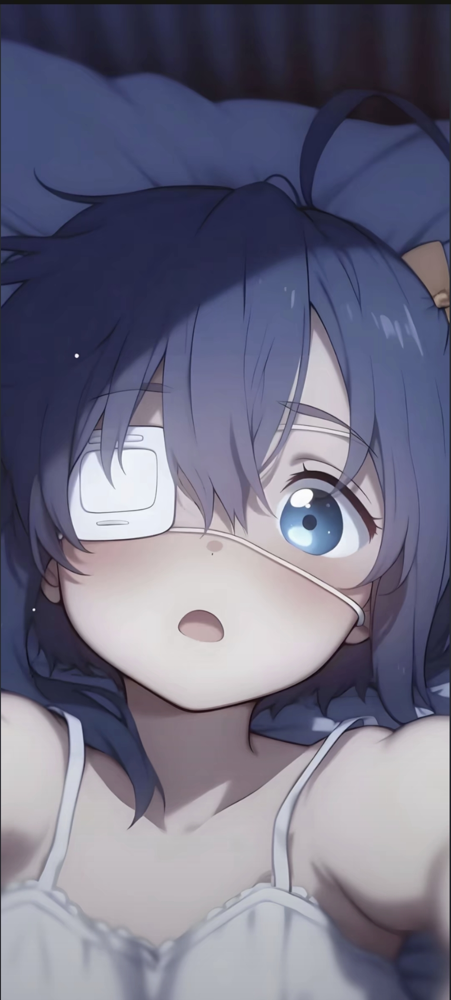

您的浏览器不支持视频播放。

ALL
王飘飘专区
普飘专区
733专区
王飘飘专区
嗨
啊（激动）
啊~
哎
哎呀
呃~呃
诶嘿
嘬嘴
哈气
呵
得
好美
好
的
来
啦
太美了
美
喵
你
哥
我的小宝贝
我来了
太
我
呀
噫
战术喝水
长
普飘专区
来了哈（普）
高（普）
毛才高（普）
彭浩然（普）
周子翔（普）
733专区
毛
才
高
毛才高
汪
训
国
汪训国
彭
浩
然
彭浩然
周
子
翔
周子翔
殷
杰
殷杰
狂魔哥
SHOOTING STAR